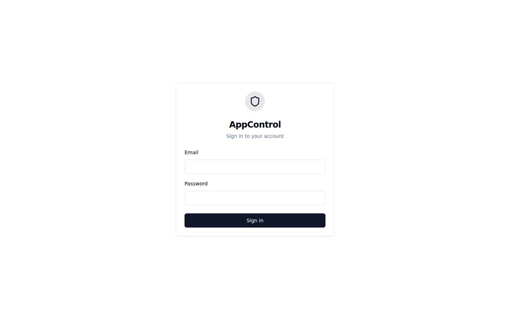

AppControl v4 — User Guide¶
Operational mastery and IT system resilience. Map your applications as dependency graphs, monitor health in real time, orchestrate sequenced operations, and maintain full DORA-compliant audit trails.
Table of Contents¶
- Getting Started
- Login
- Dashboard
- Application Management
- Creating an Application (Onboarding Wizard)
- Importing Applications
- Auto-Discovery
- Map View
- Interactive DAG Visualization
- Component Detail Panel
- Multi-Site View
- Operations
- Full Application Start
- Full Application Stop
- Error Branch Restart
- DR Site Switchover
- Custom Commands
- Dry Run Simulation
- Diagnostic & Rebuild
- Infrastructure
- Agents
- Gateways
- Sites
- Enrollment Tokens
- Users & Permissions
- User Management
- Team Management
- Sharing & Permissions
- Reports & Compliance
- Settings & Administration
- Settings
- API Keys
- Supervision Mode
- Scheduler Integration
- Security Architecture
Getting Started¶
Login¶
AppControl supports multiple authentication methods: OIDC (Keycloak, Okta, Azure AD), SAML 2.0 (ADFS, Azure AD), and local authentication for development environments.
After authenticating, you are redirected to the Dashboard. Your session uses RS256-signed JWT tokens with automatic refresh.

Login page — supports OIDC, SAML 2.0, and local authenticationDashboard¶
The Dashboard is your command center. It provides a real-time overview of all applications you have access to.
What you see at a glance:
- Application cards — each card shows the application name, overall health status, and a component count breakdown (running, failed, stopped)
- KPI tiles — aggregate metrics across your portfolio: total applications, components running, components failed, agents connected
- Live event feed — the most recent operations, state changes, and alerts across all visible applications
- Quick filters — focus on applications by status (healthy, degraded, failed) or by site
- Search — locate applications by name or tag instantly
The Dashboard updates in real time via WebSocket — status changes appear immediately without manual refresh.
 Dashboard — real-time overview of all applications with KPIs and live event feed
Dashboard — real-time overview of all applications with KPIs and live event feed
Application Management¶
Creating an Application¶
The Onboarding Wizard guides you through creating a new application step by step. No YAML files or CLI commands needed.
The wizard walks you through:
- Welcome — introduction and getting started
- App Info — name, description, and primary site selection
- Sites — configure primary and DR site assignments
- Components — define each component with its type, agent, and commands (check, start, stop)
- Dependencies — draw the dependency graph between components
- Review — verify the complete configuration before creation
- Done — application is created and agents start monitoring immediately
 Onboarding Wizard — guided application creation
Onboarding Wizard — guided application creation
Each component requires at minimum a name, type, and agent assignment. The check command determines how AppControl monitors the component's health. Start and stop commands enable orchestrated operations.
 Component configuration — define check, start, and stop commands for each component
Component configuration — define check, start, and stop commands for each component
Importing Applications¶
For teams that prefer infrastructure-as-code, AppControl supports YAML and JSON import of application definitions.
Import workflow:
- Upload a YAML/JSON file defining components, dependencies, and commands
- AppControl validates the structure (checks for DAG cycles, missing references, invalid types)
- The Import Wizard lets you review the parsed application, map components to agents, and resolve conflicts
- The application is created with full version tracking in
config_versions
You can also import from existing AppControl v3 configurations — the importer automatically maps legacy component types and command formats.
 Import page — upload YAML/JSON application definitions
Import page — upload YAML/JSON application definitions
Auto-Discovery¶
The Discovery feature automatically detects running processes on monitored servers and suggests application topologies.
How it works:
- Agents scan their hosts for running processes, listening ports, and service definitions
- Discovery correlates processes across agents to identify multi-server applications
- A draft topology is generated with suggested component names, types, and dependencies
- You review and refine the draft before promoting it to a real application
This is especially useful for onboarding existing applications that don't have formal documentation.
 Auto-Discovery — detect and map running applications automatically
Auto-Discovery — detect and map running applications automatically
Map View¶
Interactive DAG Visualization¶
The Map View is the heart of AppControl. It renders your application's component topology as an interactive directed acyclic graph (DAG) powered by React Flow.
Key capabilities:
| Feature | Description |
|---|---|
| Pan & Zoom | Navigate large topologies with mouse drag and scroll wheel |
| Color-coded nodes | Each node reflects its FSM state: green (running), red (failed), gray (stopped), blue pulse (starting/stopping) |
| Dependency edges | Directional arrows show which components depend on which |
| Error branch | Failed components and their dependents are highlighted in pink for quick identification |
| Toolbar actions | Start All, Stop All, Restart Branch, Switchover, Diagnose, Export |
| Layout controls | Automatic arrangement: top-down, left-right, or radial |
| Mini-map | Overview navigation for large application graphs |
| Keyboard shortcuts | Ctrl+F search, Space toggle start/stop, F5 refresh, ? show all shortcuts |
 Map View — interactive DAG visualization with color-coded component states
Map View — interactive DAG visualization with color-coded component states
Component Detail Panel¶
Click any component node to open the Detail Panel on the right side. It provides deep insight into a single component.
Panel tabs:
| Tab | Content |
|---|---|
| Status | Current FSM state, last check result, uptime counter, state history timeline |
| Checks | Results from all three diagnostic levels (health, integrity, infrastructure) with stdout/stderr |
| Metrics | Visualizations of metrics extracted from check commands (gauges, sparklines, charts) |
| Commands | Execute start, stop, or custom commands with live terminal output |
| Logs | Agent log tail for this component with search and filtering |
| Config | Component configuration: commands, intervals, timeouts, environment variables |
 Detail Panel — component status, check results, metrics, and command execution
Detail Panel — component status, check results, metrics, and command execution
Multi-Site View¶
When an application is configured with site overrides (primary + DR), the Map View displays split-panel component nodes showing the status on each site simultaneously.
This gives operators instant visibility into both the primary and disaster recovery deployments without switching views.
Multi-Site View — primary and DR status side by side on each component node
Operations¶
AppControl supports seven core operations. Every operation is logged in the audit trail before execution begins.
Full Application Start¶
Starts all components following the dependency graph bottom-up:
- Components with no dependencies start first
- Each component waits for its dependencies to reach
RUNNING - Components at the same level start in parallel
- Progress is tracked per-component with real-time updates on the map
Full Application Stop¶
Stops all components in reverse dependency order (top-down):
- Components with no dependents stop first
- Each component waits for all its dependents to reach
STOPPED - Configurable timeout per component with force-stop option
Error Branch Restart¶
When a component fails, AppControl identifies the error branch: the failed component and all its dependents (highlighted in pink on the map).
The restart sequence: 1. Stop all components in the error branch (top-down) 2. Restart the root cause component 3. Start all dependent components (bottom-up) once the root is running
This avoids restarting the entire application when only a subset is affected.
DR Site Switchover¶
Migrates an application from the primary site to the DR site in six phases:
| Phase | Name | Description |
|---|---|---|
| 1 | Pre-check | Validate DR site readiness: agents connected, resources available |
| 2 | Quiesce | Gracefully stop incoming traffic and drain active sessions |
| 3 | Stop Primary | Stop all components on the primary site (reverse DAG) |
| 4 | Data Sync | Verify data replication is complete and consistent |
| 5 | Start DR | Start all components on the DR site (DAG order) |
| 6 | Validate | Run health checks to confirm successful switchover |
Each phase is logged and can be monitored in real time. Rollback is available during phases 1-3.
Cross-site detection: Before switchover, the system checks if components are already running on the target site (via cross-site probe). If detected, a warning is displayed to the operator.
Custom Commands¶
Execute predefined commands on specific components: log rotation, cache clearing, configuration reload, database maintenance, or any custom operation. Commands are subject to permission checks and fully audited.
Dry Run Simulation¶
Simulate any operation without making changes:
- Validates the DAG and dependency order
- Checks agent connectivity and user permissions
- Reports the expected execution sequence
- Identifies potential issues before they happen
Always recommended before switchovers or large-scale operations in production.
Diagnostic & Rebuild¶
A three-level progressive assessment followed by surgical reconstruction:
- Level 1 (Health) — identify which components are not running
- Level 2 (Integrity) — check data consistency for failed components
- Level 3 (Infrastructure) — verify OS, filesystem, and prerequisites
- Assessment report — findings with recommended actions
- Rebuild execution — targeted fixes based on the assessment
Infrastructure¶
Agents¶
Agents are lightweight Rust binaries deployed on monitored servers. They execute health checks, start/stop commands, and report status back through the gateway using mTLS.
The Agents page shows:
- All registered agents with connection status (connected, disconnected)
- Heartbeat timestamps and latency
- Agent version and OS information
- Number of components managed by each agent
- System metrics (CPU, memory, disk) when available
Communication uses delta-only sync: agents send only state changes, not full status on every check cycle.
 Agents — monitor connected agents, heartbeat status, and managed components
Agents — monitor connected agents, heartbeat status, and managed components
Gateways¶
Gateways are the communication hubs between agents and the backend. Each site or zone has its own gateway. Agents connect to their zone's gateway via mTLS WebSocket.
The Gateways page shows:
- Registered gateways with connection status
- Associated site and zone
- Number of agents connected through each gateway
- Gateway version and uptime
 Gateways — manage communication hubs and monitor agent connections
Gateways — manage communication hubs and monitor agent connections
Sites¶
Sites represent physical or logical locations: datacenters, DR sites, staging environments. Every application and gateway belongs to a site.
Site types: primary (production), dr (disaster recovery), staging, development.
Sites are configured at setup time and used during DR switchover operations to orchestrate transitions between locations.
 Sites — configure datacenters, DR sites, and environments
Sites — configure datacenters, DR sites, and environments
Hostings¶
A hosting groups related sites by physical datacenter or cloud region. For example, "Datacenter Paris" might contain sites prod-paris and staging-paris.
Key features: - Create hostings and assign sites to them from the Hostings admin page - During switchover, sites are grouped by hosting so operators can identify intra-hosting vs. cross-hosting failovers - The hosting name appears as a badge on the Sites page and in JSON exports
Hostings — group sites by datacenter or cloud region
Cross-Site Probe¶
When a DR binding profile exists, AppControl automatically monitors the passive site to detect if a component is unexpectedly running there (e.g., started manually outside AppControl).
How it works:
1. Every 5 minutes, the backend sends the component's check_cmd to the passive site's agent
2. If the check succeeds (exit code 0), the component is flagged as running on the wrong site
3. A DUAL warning badge appears on the component in the map view
4. A CrossSiteAlert WebSocket event is broadcast to connected clients
This prevents "split-brain" scenarios where the same application runs on both sites simultaneously after a manual intervention.
Enrollment Tokens¶
New agents and gateways are onboarded using enrollment tokens for secure, authenticated registration.
Enrollment workflow:
- An administrator generates an enrollment token (scoped to
agentorgateway) - The token is provided during installation via CLI flag or config file
- On first connection, the component presents the token and receives mTLS certificates
- The token is single-use and expires after a configurable duration
 Enrollment Tokens — generate and manage secure registration tokens
Enrollment Tokens — generate and manage secure registration tokens
Users & Permissions¶
User Management¶
Manage all users in your organization. Users can be created manually or auto-provisioned through OIDC/SAML on first login.
User roles:
| Role | Scope | Capabilities |
|---|---|---|
| Admin | Organization-wide | Full platform access, manage users/teams/sites/agents |
| Operator | Per-application | Start, stop, restart where granted operate permission |
| Editor | Per-application | Modify configuration where granted edit permission |
| Viewer | Per-application | Read-only access to maps, logs, and reports |
 Users — manage accounts, roles, and organization membership
Users — manage accounts, roles, and organization membership
Team Management¶
Teams group users for collective permission assignment. When a team is granted access to an application, all current and future members inherit that permission.
Effective permission = MAX(direct user permission, team permissions). Team membership never reduces access.
 Teams — organize users into groups for collective permission management
Teams — organize users into groups for collective permission management
Sharing & Permissions¶
Applications can be shared with users and teams through a Google Docs-style sharing dialog:
- User search with autocomplete — find users by name or email
- Permission level selector — view, operate, edit, manage, or owner
- Share links — generate time-limited, use-limited links for convenient access
- Bulk operations — share with multiple users or teams at once
All permission changes are recorded in the audit trail.
Reports & Compliance¶
AppControl provides comprehensive reporting aligned with DORA (Digital Operational Resilience Act) requirements.
| Report | Description |
|---|---|
| Availability | Uptime/downtime metrics per application and component over configurable periods |
| Incidents | Failure timeline with root causes, resolution times, and impacted components |
| Switchover History | DR switchover history with phase-by-phase timing and outcomes |
| Audit Trail | Complete action log: every user action with timestamps and details |
| RTO Analysis | Recovery Time Objective analysis comparing actual vs. configured targets |
Reports support configurable date ranges, drill-down from summary to component-level detail, and PDF export for regulatory submission.
 Reports — DORA compliance metrics, availability charts, and incident timelines
Reports — DORA compliance metrics, availability charts, and incident timelines
Settings & Administration¶
Settings¶
The Settings page provides access to system configuration, user profile management, and platform preferences.
Configurable options:
- User profile (name, email, password)
- Notification preferences (email, webhook, in-app)
- OIDC/SAML identity provider configuration
- Organization settings
- Certificate management and PKI rotation
 Settings — system configuration and user preferences
Settings — system configuration and user preferences
API Keys¶
API keys enable programmatic access for scheduler integration, automation scripts, and CI/CD pipelines.
Creating an API key:
- Navigate to Settings > API Keys
- Click Create API Key
- Provide a descriptive name (e.g., "Control-M Production")
- Copy the generated key immediately — it won't be shown again
Key format: ac_<uuid> — passed via Authorization: Bearer ac_<uuid>
Keys are stored as SHA-256 hashes (plaintext never stored), revocable at any time, and all usage is fully audited.
 API Keys — create, manage, and revoke programmatic access keys
API Keys — create, manage, and revoke programmatic access keys
Supervision Mode¶
The Supervision Mode provides a full-screen NOC display designed for operations centers and wall monitors.
Features:
- Auto-rotating views across all monitored applications
- Large, high-contrast status indicators optimized for wall displays
- Configurable rotation interval
- Alert highlighting for failed or degraded applications
- No sidebar or navigation chrome — maximum screen real estate
Access via the /supervision route or press F11 from any page.
 Supervision Mode — full-screen NOC display for operations centers
Supervision Mode — full-screen NOC display for operations centers
Component Catalog¶
The Component Catalog allows you to define custom component types specific to your organization. Each catalog entry includes an icon, color, category, and optional default commands that are pre-filled when a user creates a component of that type.
Built-in types: database, middleware, appserver, webfront, service, batch, custom, application
Initializing the Catalog¶
Use the CLI to seed the built-in types and import custom ones:
# Seed the 8 built-in component types (idempotent)
appcontrol.sh init-catalog
# Import custom types from a JSON file
appcontrol.sh import-catalog --file catalog.json
# List all types in the catalog
appcontrol.sh list-catalog
Catalog Import Format¶
The import file is a JSON object with an entries array:
{
"entries": [
{
"type_key": "oracle-rac",
"label": "Oracle RAC Cluster",
"description": "Oracle Real Application Clusters",
"icon": "database",
"color": "#F80000",
"category": "database",
"default_check_cmd": "srvctl status database -d ${DB_NAME}",
"default_start_cmd": "srvctl start database -d ${DB_NAME}",
"default_stop_cmd": "srvctl stop database -d ${DB_NAME}"
},
{
"type_key": "controlm-job",
"label": "Control-M Job",
"icon": "calendar",
"color": "#E31837",
"category": "scheduler",
"default_check_cmd": "ctmpsm -LISTALL | grep ${JOB_NAME}"
}
]
}
| Field | Required | Description |
|---|---|---|
type_key |
yes | Unique slug identifier (e.g., oracle-rac, kafka-connect) |
label |
yes | Display name shown in the UI |
description |
no | Tooltip description |
icon |
no | Lucide icon name: database, layers, server, globe, cog, clock, zap, shield, network, calendar, terminal, box (default) |
color |
no | Hex color for the icon (default: #455A64) |
category |
no | Grouping in the palette (e.g., database, middleware, scheduler) |
default_check_cmd |
no | Pre-filled check command when this type is selected |
default_start_cmd |
no | Pre-filled start command |
default_stop_cmd |
no | Pre-filled stop command |
default_env_vars |
no | Default environment variables as JSON object |
display_order |
no | Sort order in the palette (default: 0) |
Duplicate type_key values are skipped during import (not overwritten).
REST API¶
# List catalog entries
GET /api/v1/catalog/component-types
# Create a custom type (admin only)
POST /api/v1/catalog/component-types
# Update a type (admin only)
PUT /api/v1/catalog/component-types/:id
# Delete a custom type (admin only, built-in types cannot be deleted)
DELETE /api/v1/catalog/component-types/:id
# Bulk import (admin only)
POST /api/v1/catalog/component-types/import
# Seed built-in types (admin only, idempotent)
POST /api/v1/catalog/component-types/seed
UI Integration¶
Once catalog entries are loaded, they appear in:
- Component Palette (drag & drop): dynamically populated with search/filter when more than 8 types, grouped by category
- Component Editor (type selector): searchable dropdown with icon previews, category labels, and automatic pre-fill of default commands
Scheduler Integration¶
AppControl integrates with enterprise schedulers via REST API and CLI. It is designed to be called by schedulers, not to replace them.
Supported schedulers: Control-M, AutoSys, Dollar Universe, TWS
REST API¶
# Start an application (returns operation ID)
curl -X POST https://appcontrol/api/v1/apps/{id}/start \
-H "Authorization: Bearer ac_<api-key>"
# Check application status
curl https://appcontrol/api/v1/apps/{id} \
-H "Authorization: Bearer ac_<api-key>"
CLI (appctl)¶
# Start and wait for completion
appctl app start --name "Trading Platform" --wait --timeout 300
# Check status
appctl app status --name "Trading Platform" --format json
# Stop a specific component
appctl component stop --app "Trading Platform" --component "Order Service"
Security Architecture¶
TLS Architecture¶
EXTERNAL NETWORK
Browsers/CLI ────► :443 (HTTPS via nginx)
Agents ────► :4443 (WSS mTLS direct to gateway)
│
┌─────────────┴─────────────┐
▼ ▼
┌─────────────────┐ ┌──────────────────┐
│ NGINX (web UI) │ │ GATEWAY (zone) │
│ /api/* → :3000 │ │ :4443 direct │
│ / → :8080 │ │ mTLS for agents │
└─────────────────┘ └──────────────────┘
Certificate Security (5 Layers)¶
- Token-based enrollment — SHA-256 hashed, scoped, expirable, revocable
- mTLS — per-organization CA, mutual authentication on every connection
- Certificate pinning — fingerprint verified on every reconnect
- Certificate revocation — real-time revocation deactivates agents/gateways immediately
- Audit trail — all enrollment and certificate events logged in append-only tables
Certificate Rotation¶
Seamless CA migration without downtime:
- Import new CA certificate
- Dual-trust period — both CAs trusted
- Agents automatically request new certificates
- Monitor progress in the UI
- Finalize — remove old CA
Authentication Methods¶
| Method | Use Case |
|---|---|
| OIDC | Browser SSO (Keycloak, Okta, Azure AD) |
| SAML 2.0 | Enterprise SSO (ADFS, Azure AD) |
| API Keys | Machine-to-machine (schedulers, CI/CD) |
| Local | Development and standalone deployments |
Approval Workflows (4-Eyes)¶
For critical operations in regulated environments:
- Operator initiates an operation requiring approval
- Approvers receive notifications and review details
- Once required approvals are reached, the operation executes automatically
- All decisions are recorded in the audit trail
Break-Glass Emergency Access¶
Bypass normal permissions in emergencies:
- Immediate access with justification required
- High-priority alert sent to all administrators
- Time-limited window (default: 30 minutes)
- Every action logged with break-glass flag
- Mandatory post-incident review
Screenshots are auto-generated by CI from the running application. To regenerate, run npm run screenshots from the frontend/ directory with the full stack running, or trigger the docs-screenshots workflow manually.